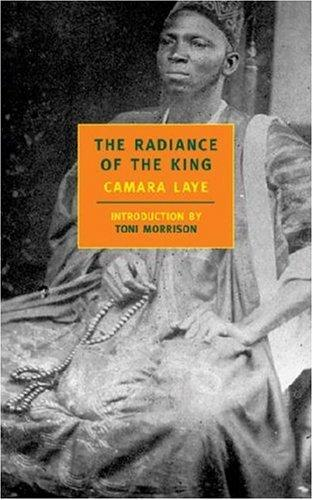
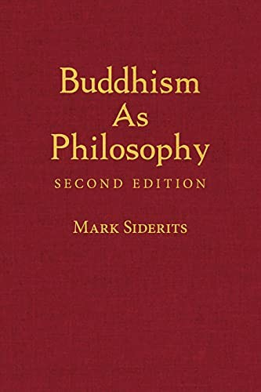
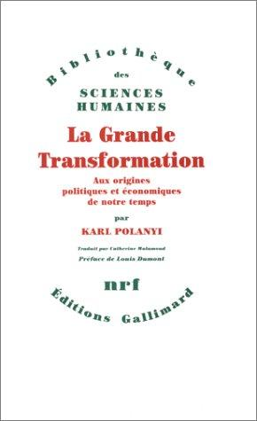
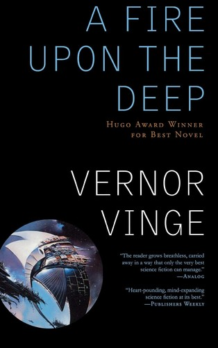
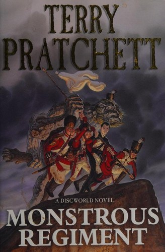

Recommendations for the week of 14 September 2026.
Three fresh edges this week, stepping off the poetry-and-translated-lit path the last few highbrow picks leaned on. Translated literary fiction reaches sub-Saharan Africa for the first time — Guinea — with a colonial quest-romance turned completely inside out. The non-Western philosophy edge gets a rigorous analytic entry into Buddhist thought, satisfying the epistemology itch without another lap around probability. And the economics thread returns with the founding argument that the free market was built, not born. The comfort picks stay in the three best-loved veins — big-idea SF, Golden-Age crime, Discworld — but reach for fresh titles: a Hugo-winning space opera, a fog-bound London thriller, and a standalone Pratchett about a girl smuggled into a war.




